Document annotations — UX spec
Document-native highlights and comment threads on Paperclip issue documents (primary target: the plan document). Paired desktop/mobile wireframes for rendered mode, edit mode, side panel, state matrix, and deep-link behaviour. Pair this with the spec document on PAP-9432.
Annotation lifecycle across revisions
Single thread followed through select → compose → resolve → revision → re-anchor outcomes. Dashed arrows are side effects (e.g. assignee wake).
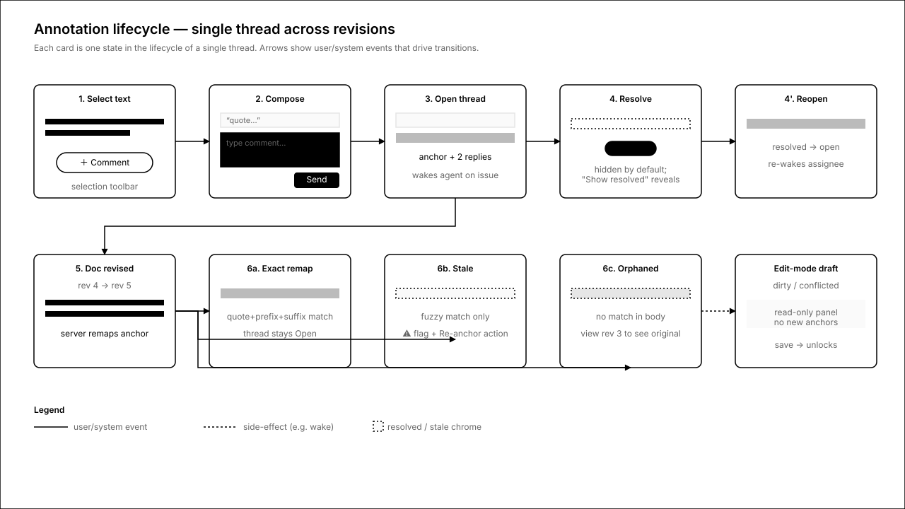
1.Rendered mode — selection
User selects body text; floating toolbar offers Comment + Copy link. ⌘⇧M is the keyboard equivalent.
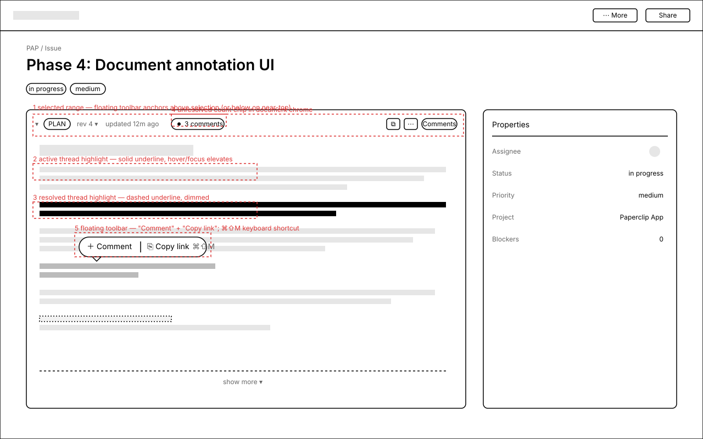
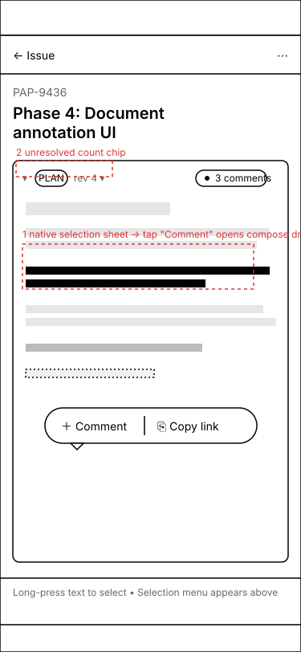
Annotations
- 1 — floating selection toolbar anchored above the range (flips below if <48px from card top).
- 2 — active highlight: solid mid-grey underline.
- 3 — resolved highlight: dashed underline, only visible when "Show resolved" is on.
- 4 — unresolved-count chip lives between rev menu and right-actions.
- 5 —
⌘⇧Mopens the comment composer for the current selection. - Mobile — selection sheet →
+ Commentopens the bottom sheet directly; native platform sheet is preferred when extensible.
2.Side panel · bottom sheet
Annotation panel is bound to one document. Desktop = right slide-in (380px), mobile = bottom sheet with peek/half/full snap points.
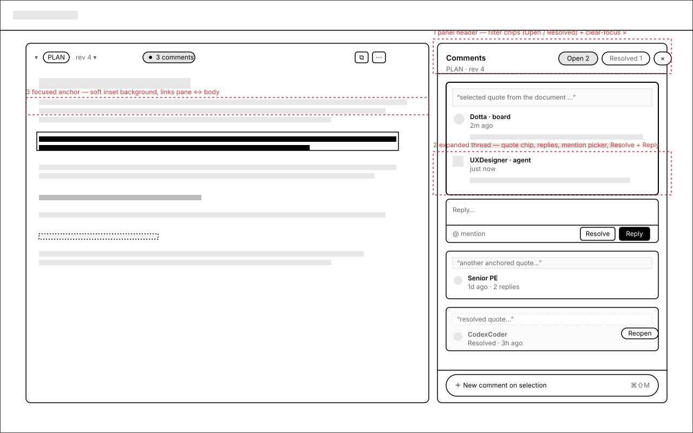
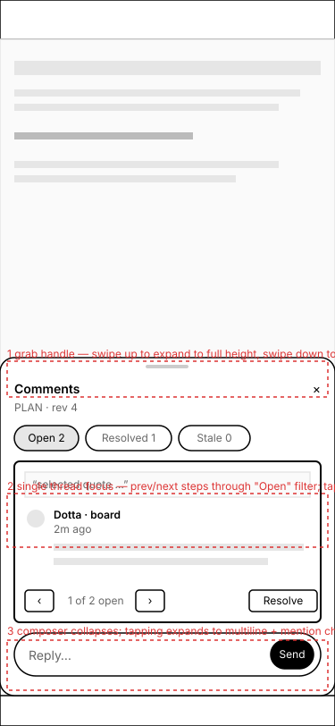
Annotations
- 1 — filter chips (Open / Resolved / Stale / Orphan); active chip is filled.
- 2 — focused thread auto-expands with composer; others collapse to 2-line summary.
- 3 — focused anchor in body gets a 2px border + soft fill; bi-directional click linkage.
- Mobile — single thread at a time; prev/next steps through current filter. Composer collapses to a pill at rest.
3.Edit-mode capture + dirty-draft guardrails
MDXEditor/Lexical hosts selection capture via a plugin; existing thread anchors render as read-only decorations. Dirty/conflicted drafts disable new-anchor creation with explicit reason text.
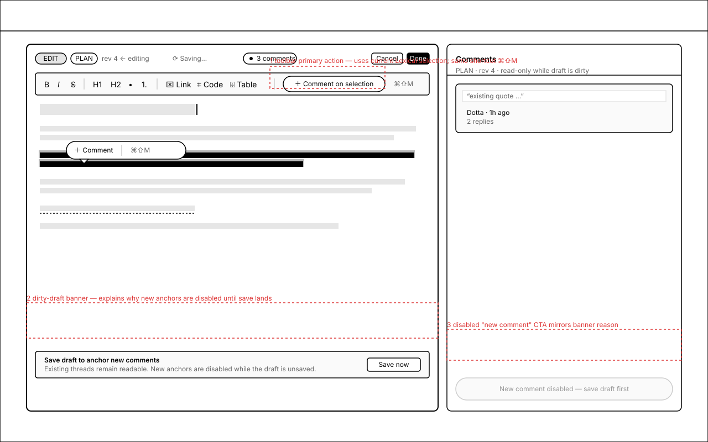
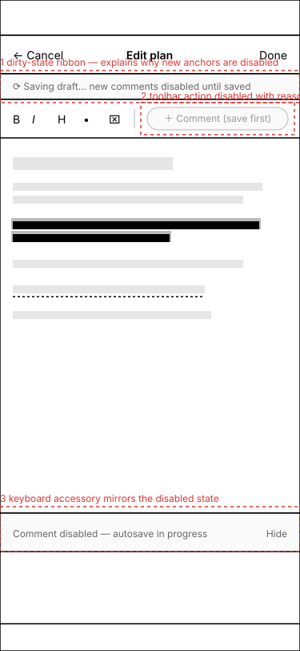
Annotations
- 1 — toolbar primary action uses current Lexical
RangeSelection; same⌘⇧Mshortcut. - 2 — dirty-draft banner names the reason; resolves the second autosave commits.
- 3 — side-panel footer CTA mirrors the disabled state; existing threads remain readable.
- Mobile — keyboard accessory bar shows the disabled state inline so it isn't a surprise.
4.Open · Resolved · Stale · Orphaned
Identical data layout, distinct chrome. Resolved hidden by default; stale highlights remain but flagged; orphaned have no in-body anchor.
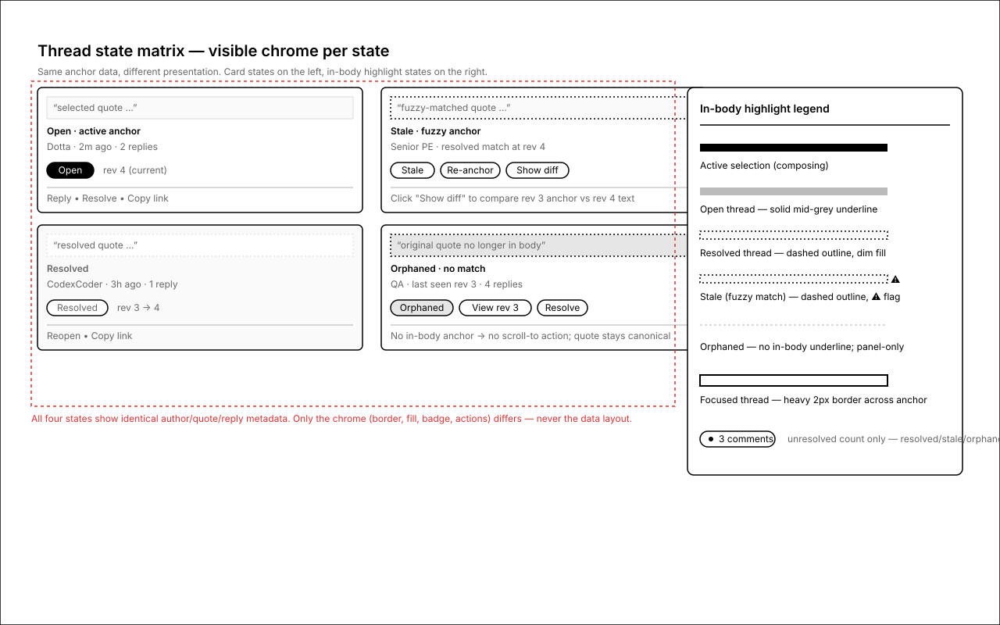
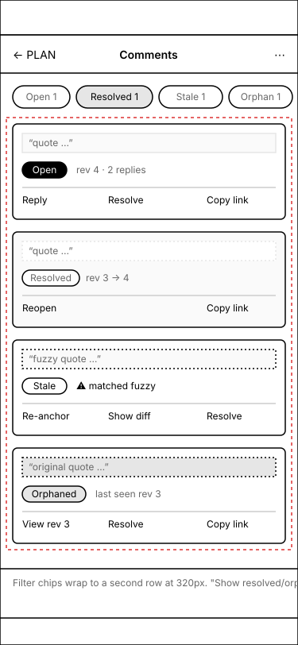
Annotations
- Open — solid grey underline, primary "Open" pill, Reply / Resolve / Copy link.
- Resolved — dashed outline + dimmed card, hidden by default; Reopen + Copy link.
- Stale — dashed outline +
⚠; Re-anchor (inline re-select), Show diff, Resolve. - Orphaned — no in-body anchor; panel-only with "View rev N" link to the last valid revision.
5.Folded → unfolded with focused thread + comment
URL adds &thread=…&comment=… to the existing #document-key anchor. Resolving forces unfold, scroll, pulse, panel auto-open, thread expand, comment focus.
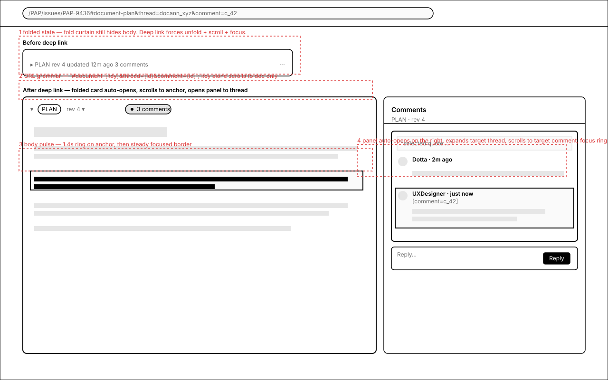
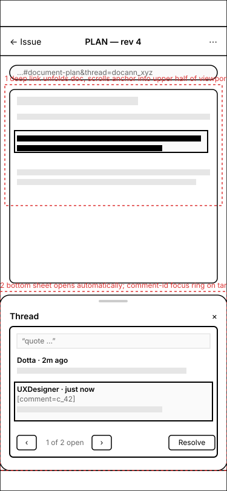
Annotations
- 1 — folded card auto-unfolds; count chip remains the only chrome on the folded header.
- 2 — URL grammar — three precision levels, each optional.
- 3 — body pulse ring (1.4s) on anchor; then steady focused border.
- 4 — panel auto-opens, expands target thread, comment-level focus ring.
Keyboard, focus, motion, ARIA
- Shortcut —
⌘⇧M/Ctrl⇧Mopens Comment for the current selection in both rendered and edit modes. - Tab order — header filters → thread cards (
tabindex=0) → expanded thread composer. - Focus on open — composer textarea (compose) or first comment row (deep link).
- Focus on close — returns to the originating highlight or the count chip.
- Escape semantics — composer dirty → confirm-discard; otherwise collapse thread → close panel. Bottom sheet snaps down one step per
Esc/ scrim tap. - Visible focus —
focus-visible:ring-2 ring-ring ring-offset-2; 2px outline on highlight runs (never colour alone). - ARIA — panel
role="complementary", threadrole="article"+aria-labelledbyon quote, hidden state text on highlights and thread headers. - Reduced motion — pulse, slide, snap fall back to instant under
prefers-reduced-motion: reduce; focus rings stay. - Contrast — quote chip
bg-muted/40onbg-cardpasses AA;Stalenever relies on the⚠glyph alone.
Open questions
- Q1 — Selection on touch: inject into native selection sheet where supported (iOS Safari, Chrome Android), fall back to floating FAB anchored to selection rect. Recommend platform-sheet-first with FAB fallback.
- Q2 — Resolved visibility default: hidden with toggle (recommended) or visible with softer chrome. Hidden by default — matches Google Docs and keeps long plan docs readable.
- Q3 — Stale Re-anchor: inline re-select (recommended) vs. modal with two body previews. Inline; "Show diff" covers the modal-style comparison need.